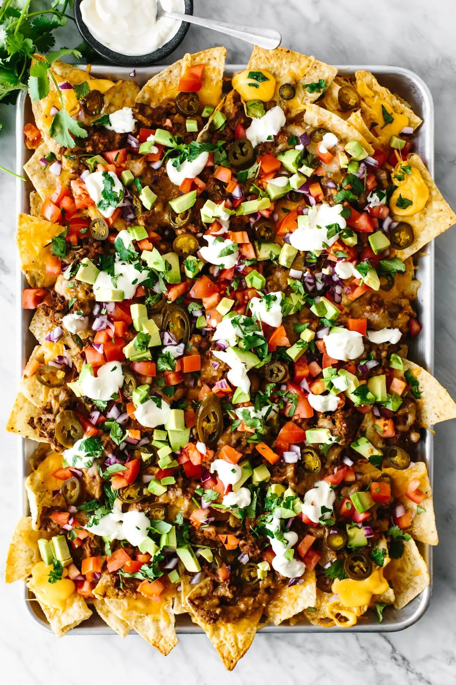

Nachos

Description
There’s nothing quite like a tray overflowing with nachos for an entertaining and playful appetizer.
The base starts with everyone’s favorite – crunchy tortilla chips. The chips then get layered with all the
savory Mexican fixings you can imagine – spiced meat, gooey cheese, beans, pickled jalapenos, avocado chunks,
salsa – you name it!
Ingredients
For the Nachos
- 1 pound ground beef
- 2 tablespoons taco seasoning
- 1 (16-ounce/454g) can refried beans
- ¼ cup water
- 1 (13-ounce/368g) bag tortilla chips
- 2 cups shredded cheese (I used a mix of cheddar and Monterey Jack)
- ¼ cup pickled jalapenos
For the Toppings
- 3 roma tomatoes, diced
- ½ cup diced red onion
- 1 avocado, diced
- ⅓ cup sour cream
- ¼ cup roughly chopped fresh cilantro leaves
Steps
- Preheat the oven to 400°F(200°C).
- Add the ground beef to a skillet over medium heat and cook for about 5 minutes,
using a spatula to break up the meat as it cooks. Drain any fat. Then add the taco seasoning
and cook for 5 minutes more, until browned and slightly crispy.
- Add the refried beans and water to the skillet and stir until combined.
- On a rimmed sheet pan, add a layer of tortilla chips and top with the ground beef mixture,
cheese and jalapenos. Bake for about 10 to 15 minutes, until the cheese is melted and the edges
of the tortilla chips are golden.
- Remove from the oven and add the diced tomatoes, onion, avocado, sour cream, and cilantro.
Serve while warm.